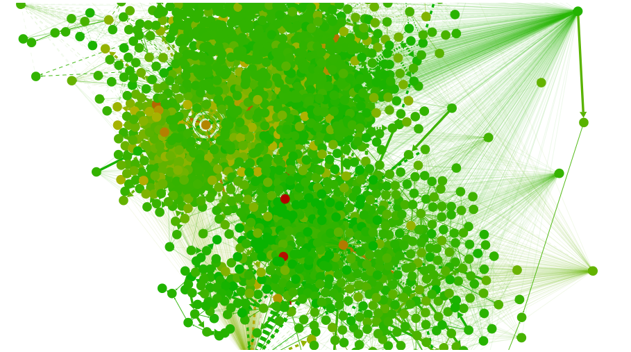
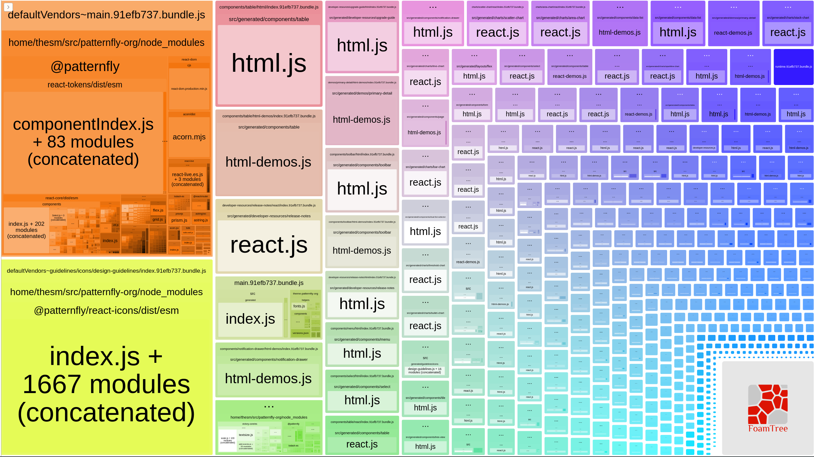
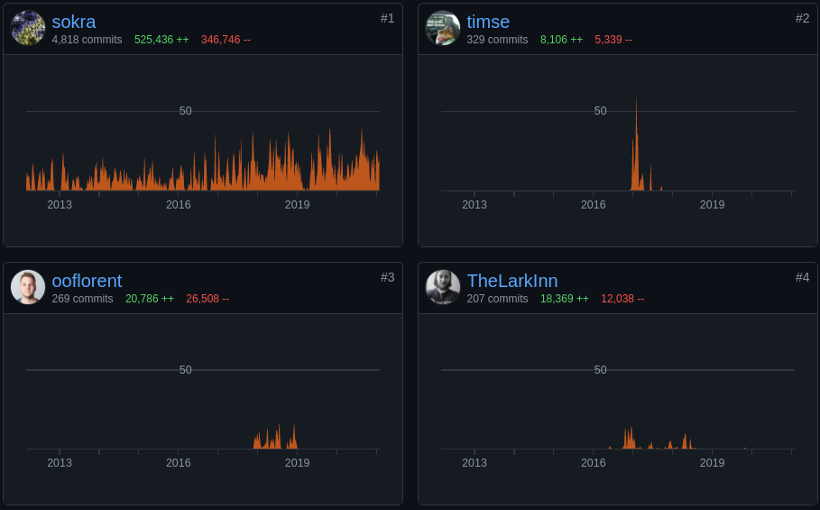
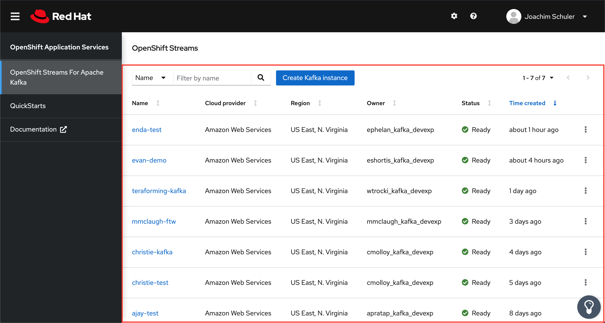

Module federation
A new Webpack 5 featureBefore webpack
<script src="//some-cdn.com/react.js"></script>
<script src="//some-cdn.com/react-dom.js"></script>
<script>
const MyApp = () => "Hello world";
const root = document.getElementById('root');
ReactDOM.render(React.createElement(MyApp), root);
</script>After webpack
import React from 'react';
import ReactDOM from 'react-dom';
const MyApp = () => "Hello world";
const root = document.getElementById('root');
ReactDOM.render(<script src="bundle.js"></script>You can bundle anything!

Module graphs pick modules
Modules are grouped into chunks
But you can't share the chunks
console.log("I will not repeat myself");
console.log("I will not repeat myself");
console.log("I will not repeat myself");
console.log("I will not repeat myself");
console.log("I will not repeat myself");
console.log("I will not repeat myself");
console.log("I will not repeat myself");
console.log("I will not repeat myself");
console.log("I will not repeat myself");
console.log("I will not repeat myself");
console.log("I will not repeat myself");
console.log("I will not repeat myself");
console.log("I will not repeat myself");
console.log("I will not repeat myself");Webpack 5 adds a new feature called "Module Federation", which allows multiple webpack builds to work together. From runtime perspective modules from multiple builds will behave like a huge connected module graph. From developer perspective modules can be imported from specified remote builds and used with minimal restrictions.- @sokra, Webpack 5 release notes
Multiple separate builds should form a single application. These separate builds should not have dependencies between each other, so they can be developed and deployed individually.- Webpack 5 docsThis is often known as Micro-Frontends, but is not limited to that.
Who wrote it?
Tobias Koppers (Webpack creator and maintainer)
Zack Jackson
- Principal engineer at lululemon.com
- Added HMR to mini-css-extract-plugin
- webpack maintainer
- react-universal-component maintainer
Tobias Koppers
#1 Webpack contributor

Their reason?
DLLPlugin wasn't good enough
new webpack.DllReferencePlugin({
context: __dirname,
manifest: require('./manifest.json'),
scope: 'xyz',
sourceType: 'commonjs2'
});
The RFC reason
- I expect to be able to require modules or chunks from other Webpack bundles hosted elsewhere.
- I don't want to manage externals and worry about synchronizing them across systems
- I don't want a single point of failure, like a commons chunk
- I want to load code from another build, like dynamic imports and code-splitting
The RFC reason, cont.
- I want multiple builds to look and feel like a monolith in the client
- I am able to deploy frontend apps independently and expect Webpack to orchestrate at runtime
- I don't want to use less integrated/framework oriented solutions like SingleSPA, browser events, service workers - I want to use Webpack as the host container for foreign chunks and modules...
The enterprise reason
- If desired, an entire company should be able to federate code across every UI, from user-facing to backend. Effectively turning a multi build, multi team, multi mono-repo company into one SPA in the browser. Removing the need for page reloads or downloading additional code and bundles containing mostly the same node modules
The ask
import('website-one/Button')
The solution's code
It's been a 9 months since the beta release in May 2020- Februrary 2021, feat: support custom chunk name in container expose options
- fix: minified versionLt did not match the original function
- A few little bugfixes to Module Federation
- rename module federation classes for be more specific
- Refactor shared modules to allows multiple version in a single build
- add script external
- Versioned shared modules for Module Federation
- change Module Federation API to be more similar to exports field
- May 2020, Merge Module Federation into webpack 5 beta
- Module federation bugfixes and DX
- fix: module federation plugin library should be optional
- Februrary 2020, Add ModuleFederationPlugin and full test case
Internals
The ModuleFederationPlugin consists of two plugins:- ContainerPlugin
- ContainerReferencePlugin
new ModuleContainerPlugin({
name: 'app_two',
shared: {
react: { singleton: true },
'react-dom': { singleton: true }
},
exposes: {
Button: './src/Button'
}
});__webpack_override__({
Button: () => 'I will override Button module',
});
new ModuleReferencePlugin({
remoteType: 'global',
remotes: {
app_two: 'app_two@http://app_two_url.com'
},
overrides: {
react: { singleton: true },
'react-dom': { singleton: true }
}
});
All together
new ModuleFederationPlugin({
name: 'app_one',
remotes: {
app_two: 'app_two@http://app_two_url.com'
},
shared: {
react: { singleton: true },
'react-dom': { singleton: true }
}
})new ModuleFederationPlugin({
name: 'app_two',
exposes: {
Button: './src/Button'
},
shared: {
react: { singleton: true },
'react-dom': { singleton: true }
}
})Basic demo
From ScriptedAlchemy's holy repo:- app1 is host
- app2 is remote that exposes Button
API
export interface ModuleFederationPluginOptions {
name?: string;
exposes?: { [moduleName]: [filepath] };
filename?: string; // Defaults to remoteEntry.js
library?: { name?: string, type: 'var' | 'module' };
remoteType?: 'var' | 'module';
remotes?: { [remoteName]: [localRemoteName] };
shared?: {
[moduleName]:
{ eager?: boolean,
version?: string,
singleton?: boolean,
shareScope?: string } };
}More demos
Demo: cloud.redhat.com
Insights-chrome tries to load remote entrypoint first from a fed-mods.json file!- Saves reloading chrome and shared modules (patternfly, react, react-redux, lodash) on cross-app navigation
- Migration guide
- Coming TODAY to ci.cloud.redhat.com/beta!
Demo: Managed Kafka
- Host app wraps mk-ui-frontend and strimzi
- Allows developing mk-ui-frontend and strimzi without CRC env
- Host loads OpenshiftStreams components from Strimzi
OpenshiftStreams
Gotcha #1: No dynamic remotes
To use dynamic remotes you can use ~80 lines of boilerplateManaged Kafka wrote a dynamic loader
cloud.redhat.com created scalprum as a dynamic loader
Gotcha #2: Public path
To avoid hardcoding at build time:publicPath: 'auto'
Gotcha #3: CORS
Your remotes must not disallow the host's origin.https://some-openshift-app.com
cannot load
https://cloud.redhat.com/apps/remote/remoteEntry.js